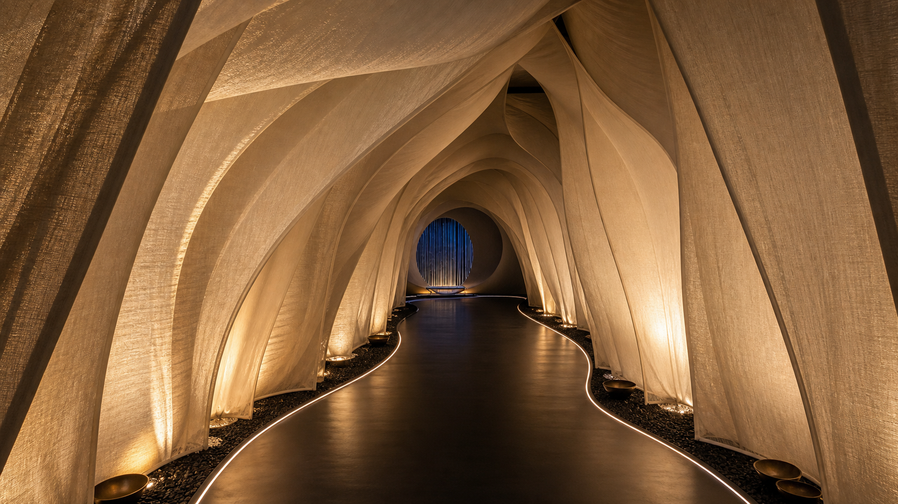

Craft Experiences
Hands, Process, Textile
Block printing, pottery, calligraphy, saree draping, upcycled bandana styling, rangoli wall participation, and the bindi experience.
A premium, immersive cultural exhibition exploring Indian craftsmanship, sensory memory, material intelligence, and participatory experiences through a contemporary lens.

Bindi to Brera is not a statement of geography, but of perception.
While hosted at Fabbrica del Vapore, the word Brera symbolises craftsmanship, refinement, artistic sophistication, and premium cultural experience.
The exhibition challenges stereotypes surrounding India by reframing it through material culture, sensory storytelling, craftsmanship, and immersive design.
Bindi represents identity, intimacy, and cultural symbolism. Brera represents curation, luxury, and elevated artistic value. Together, they create a bridge between heritage and contemporary perception.
Block printing, pottery, calligraphy, saree draping, upcycled bandana styling, rangoli wall participation, and the bindi experience.
Spice Archive, Fragrance Chamber, Ayurvedic Products, and Musical Instruments presented as material culture rather than spectacle.

An immersive tunnel of origin, vibration, spatial transition, and reflection inspired by architecture and sonic philosophy.
The site now uses a restrained black, cream, muted earth, indigo, and metallic-accent palette. The mood is closer to a luxury exhibition, fashion installation, and cultural museum than an event-led spectacle.

Two days in Milan dedicated to craft, material memory, and contemporary Indian cultural perception.